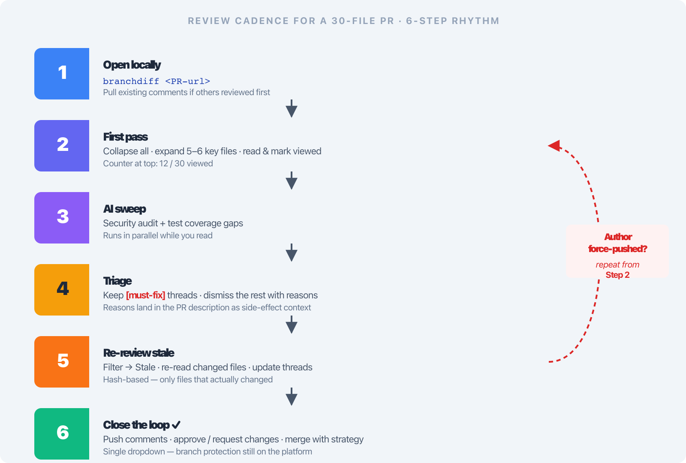
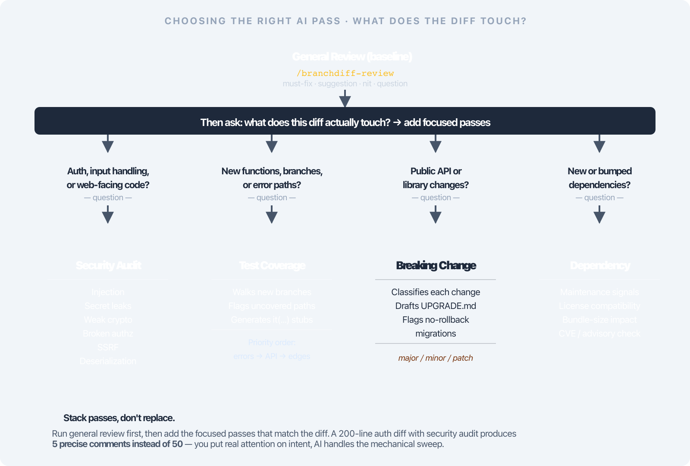

Deck 05 · branchdiff features
Automatic PR review, with you at the wheel.
Stop pinging Slack to ask if anyone re-reviewed the new push. branchdiff auto watches your open PRs, runs your AI reviewer only when there are new commits, and never posts a comment without your flag.
auto open PRs · new commits only
--worktree per-PR isolation
--auto-push the only remote path
GitHub + Bitbucket
02 · the problem
Re-review is the forgetful tax.
- Reviewers forget to re-review. You left comments, the author pushed fixes, pinged you in Slack — half the time nothing happens.
- Fear of the autonomous post. "The AI commented on the PR without me" is a real fear — engineers won't hand a model the keys to their repo.
- Reviewing someone's PR nukes your tree. gh pr checkout switches your working branch — the file you were mid-edit on is gone.
- Two forges, two dashboards. GitHub and Bitbucket each make you re-click through every PR to see what's new since you last looked.
The result: re-review becomes a manual chore — so it slips, and threads that should have been caught before merge land in production.
03 · the solve
branchdiff auto: watch, decide, review — you keep the keys.
One command lists every open PR with non-merge commits since your last review. You pick which to run your AI on. Every escalation — the actual review, the push to remote, the verdict — is gated behind a flag you have to set.
auto
Watch open PRs
GitHub + Bitbucket, new commits only
--worktree
Per-PR isolation
Never switches your branch
--auto-push
Only remote path
Nothing leaves without your flag
You stay in control of every escalation. The watch is automatic; the review, the push, and the verdict are not.
04 · cadence
A cadence for re-review — not a Slack ping.

Six steps: watch · detect new commits · pick · review · reconcile · decide
05 · the picker
Finds the PRs that actually need you.
- Lists open PRs on GitHub and Bitbucket — one source, two forges.
- Decides which have non-merge commits since your last review. Merge commits don't count; the diff does.
- Numbered picker: comma-separated numbers, a for all, q to quit.
- Filter by branch: --source and --dest narrow the watch.
- --watch 10 loops every 10 minutes — set it once, leave it running.
~/repo
$ branchdiff auto --watch 10
# 3 open PRs with new commits since last review:
1 #142 feat: webhook retry (4 new)
2 #151 fix: race in queue (2 new)
3 #160 docs: API reference (1 new)
Pick (comma-separated, a=all, q=quit): 1,2
06 · stay in control
Every escalation is your flag.
- --auto-review skips the "run the review?" prompt.
- --notify desktop-notifies on start, done, push, and failure.
- --auto-push is the ONLY way comments reach the remote. Without it, the review stays local — you read it, then decide.
- Non-interactive shell without --auto-review → refuses. No silent AI runs from a cron job.
~/repo
$ branchdiff auto \
--tool claude \
--skill \
--auto-push \
--auto-approve
Default is read-only. Run branchdiff auto with no escalation flags and you get a local review of every PR that needs one — nothing posts anywhere.
07 · the verdict gate
Auto-approve is deterministic, not the AI's word.
The gate, not the claim. --auto-approve and --auto-request-changes both require --auto-push — and the verdict is a rule the AI cannot override, dialed by an optional severity level (1–5, next slide).
AI self-reports "safe"
A model that asserts "looks good, ship it" on its own output has every incentive to be wrong — and no rule says it has to look at every open thread before deciding.
branchdiff deterministic gate
Any open [must-fix] blocks approval — so does any open human-started thread. The AI reconciles prior threads: it resolves its own, and only replies to a human's. The un-enabled side still gets a written recommendation.
08 · severity levels
Dial the gate — five severity levels, one flag.
1
must-fix
default — today's gate
5
any
every tag, untagged too
Human threads always block. Any thread a human started counts toward the gate at every level — only the AI-tagged boundary moves. --auto-approve 2 / --auto-request-changes 4 pick the level; both flags must agree if both are set.
The run explains itself first. Before auto or review run touches a PR, it prints what it's about to do — a "Using:" list of every flag you passed and a "Defaults in effect:" list for what didn't, including what the active level actually blocks.
09 · nth-pass
Nth-pass reconciliation — the AI never re-litigates.

Decision tree: prior AI threads resolved, prior human threads only replied to, new threads opened only for new findings
10 · your agent
Bring your own agent — any of six, or anything via stdin.
--tool
claude · opencode · codex · gemini · cursor · llm
Pick a built-in agent by name.
--exec
Any command reading stdin
Prints review JSON on stdout — pipe in anything.
--skill
Built-in "branchdiff" skill
Drives the Claude Code / opencode skill that ships with the CLI.
- --skill-name point at a different named skill, --additional-skill (repeatable) layer more on top, --prompt override the prompt entirely.
- The AI runs as a child process via sh -c, inheriting your shell environment — so agents resolve your auth, config dirs, and API keys exactly as they would from your terminal.
11 · parallel & worktrees
Parallel reviews, isolated in worktrees.
- --parallel <n> reviews n PRs concurrently.
- Requires --worktree — each PR checks out into its own .worktrees/pr-<n>, never touching your working branch.
- --worktree-remove cleans up — but refuses to delete a dirty worktree. It's kept and reported; you decide.
- Hooks bypassed for throwaway checkouts — your pre-commit hooks don't fire on review-only trees.
- Worktree path is visible in list and the toolbar badge, so you always know where a review is running.
~/repo
$ branchdiff auto \
--parallel 3 \
--worktree
# PR #142 → .worktrees/pr-1
# PR #151 → .worktrees/pr-2
# PR #160 → .worktrees/pr-3
# three reviews run concurrently
12 · auto-resolve
After review, an optional resolve pass.
- --auto-resolve runs a resolve pass after (or instead of) review.
- AI fixes open threads locally, then resolves them. No commit, no push — the changes live in your worktree until you decide.
- Separate skill surface: --resolve-skill-name, --additional-resolve-skill (repeatable), --resolve-prompt.
- Pairs with --worktree — resolved changes stay isolated; you inspect before merging anywhere.
~/repo
$ branchdiff auto \
--auto-resolve \
--worktree
# review pass → opens new threads
# resolve pass → fixes prior open threads
# locally, marks them resolved
# (nothing pushed)
13 · escape hatches
Ad-hoc reviews, account isolation, one auto per repo.
- Review a single PR by URL — skip the watch entirely.
- --no-skip re-opens already-reviewed PRs — the escape hatch for a review that posted nothing.
- Account / env isolation: the AI inherits your shell env, so point at a specific account via env-prefix (CLAUDE_CONFIG_DIR=...), --tool+--exec, or --exec alone.
- One auto per repo. A second is refused; --force-session to allow. Different repos are unaffected.
~/repo
$ branchdiff <pr-url> --worktree
# review a single PR by URL
# → checks out into .worktrees/pr-1
# → your working branch is untouched
14 · recap
Automatic, never autonomous.
branchdiff auto watches your open PRs, runs your AI reviewer only on ones with new commits, and gates every escalation — push, verdict, resolve — behind a flag you set.
- Numbered picker; --watch 10 loops; filter by --source / --dest.
- --auto-push is the only path to the remote; non-interactive without --auto-review refuses.
- Deterministic verdict gate — any open [must-fix] or human thread blocks approval.
- Six tools or --exec; built-in skill or your own; --parallel + --worktree isolation.
- --auto-resolve fixes threads locally — no commit, no push until you say so.